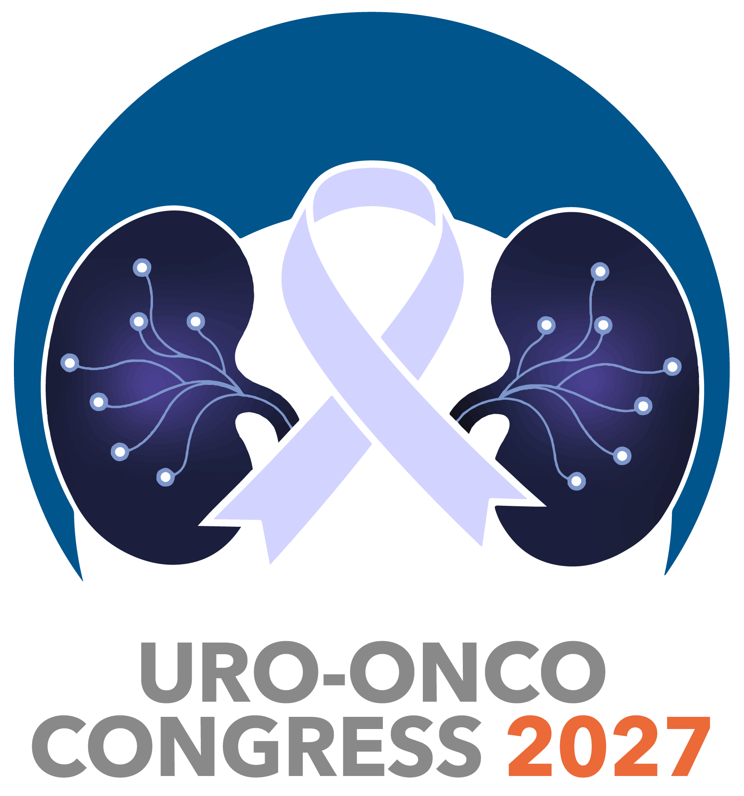

Uro-Onco Congress 2027: Innovation Without Barriers
Breaking Down Barriers, Building Better Futures
Following the success of our inaugural congress in 2025, the Gauteng Uro-Oncology Forum is proud to announce the return of the Uro-Onco Congress, taking place from 28–30 May 2027 at NH Johannesburg, Sandton.
Building on the foundations of an event that welcomed over 120 delegates, 18 local and international speakers and 11 industry partners, Uro-Onco Congress 2027 promises to deliver another engaging platform for scientific exchange, professional development and meaningful collaboration. Under the theme "Innovation Without Barriers", the 2027 congress will explore how advances in medicine, technology and multidisciplinary care can be translated into more accessible, effective and patient-centred approaches to urological cancer treatment.
Bringing together urologists, oncologists, researchers, registrars, allied healthcare professionals and industry leaders, the congress aims to challenge conventional boundaries, encourage fresh perspectives and strengthen the connections that drive progress in uro-oncology.
Because meaningful innovation is not simply about what we discover, but about making those discoveries accessible to those who need them.
Innovation Without Barriers: Our Vision for 2027
Innovation has the potential to transform cancer care, but its true value lies in its accessibility, application and impact on patients' lives.
As the healthcare landscape continues to evolve, the need to bridge gaps between medical disciplines, emerging technologies, clinical research and everyday practice has never been more important.
Uro-Onco Congress 2027 seeks to create an environment where knowledge is shared openly, expertise is valued across disciplines and meaningful partnerships can flourish.
Our vision extends beyond showcasing the latest advancements in urological oncology. We aim to encourage conversations that challenge existing limitations, promote equitable access to education and innovation, and inspire practical solutions to the challenges facing healthcare professionals and their patients.
By bringing together established specialists, emerging medical professionals, researchers and industry partners, we hope to foster a collaborative community united by a common purpose: breaking down barriers to build a better future for urological cancer care.
How Can Healthcare Professionals Benefit?
Uro-Onco Congress 2027 offers healthcare professionals an opportunity to expand their clinical knowledge, engage with respected experts and explore developments shaping the future of urological cancer management.
Through scientific presentations, multidisciplinary discussions and opportunities for professional engagement, delegates can gain valuable insights into evolving treatment approaches, emerging technologies and the importance of integrated, patient-centred care.
The congress also provides an important platform for registrars and developing medical professionals to connect with experienced specialists, exchange ideas and participate in discussions that extend beyond traditional disciplinary boundaries.
Above all, the congress is committed to making quality medical education and meaningful professional engagement more accessible, empowering healthcare professionals at every stage of their careers to contribute to better patient outcomes.
How Can Industry Partners Benefit?
Industry plays an essential role in advancing medical innovation, supporting education and helping translate emerging technologies into practical clinical solutions.
Uro-Onco Congress 2027 provides industry partners with a focused platform to engage directly with specialists, researchers and healthcare decision-makers while showcasing technologies, products and services relevant to the evolving field of uro-oncology.
Through dedicated exhibition opportunities and meaningful networking, participating organisations can strengthen professional relationships, gain insight into the needs of healthcare providers and contribute to conversations that help shape future developments in patient care.
Central to our approach is a commitment to fairness, inclusivity and equal opportunity. By maintaining a limited number of sponsorship tiers and encouraging equitable participation, the congress aims to create an environment where both emerging companies and established industry leaders can contribute meaningfully.
Participation is more than an opportunity for brand visibility. It is an opportunity to become part of a multidisciplinary community working towards a shared vision of innovation, accessibility and improved patient outcomes.
Join Us in Breaking Down Barriers
The success of Uro-Onco Congress 2025 demonstrated the value of bringing the medical community and industry together around a shared commitment to education, collaboration and progress.
In 2027, we look forward to building on that momentum, creating new opportunities for engagement and continuing the conversations that drive meaningful change in urological cancer care.
Join us from 28–30 May 2027 at NH Johannesburg, Sandton, as we break down barriers, embrace innovation and build better futures together.
Further announcements regarding the scientific programme, speakers and delegate registration will follow.